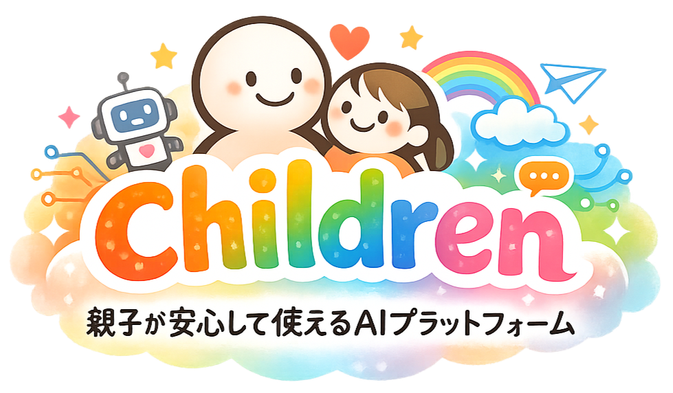

保護者が「検索・会話の規制」をかけられる
最初の設定で、お子さまの学年に合わせたおすすめの安全設定（プリセット）を選べます。 さらに、家庭ごとに「これは避けたい」という言葉や話題を自由に追加できます。 暴力・性的な内容・自傷・出会い系・課金の誘導・個人情報などを、あらかじめ避ける前提で動きます。
目的：AIまかせにせず、家庭の方針で「触れてほしくないもの」に近づかないようにするため。 設定の変更には保護者パスワードが必要で、子どもが勝手に緩めることはできません。
childrenは、子どもがAIに触れるとき、保護者が「安全のルール」を決められ、どんな会話をしているかを見守れるツールです。 AIをそのまま自由に使わせるのではなく、保護者の管理のもとで、安心して学びの入口に立てることを目指しています。
ボタンを押したあとの「はじめかた」は、このページ下部にあります。

childrenの中心は、たった2つのしくみです。ひとつは保護者がAIの“話す範囲”を決められること。もうひとつは子どもとAIの会話を保護者が確認できること。 どちらも、子どもが一人で使い込むためではなく、大人が見守りながら、安心して一緒にAIを使うためにあります。
最初の設定で、お子さまの学年に合わせたおすすめの安全設定（プリセット）を選べます。 さらに、家庭ごとに「これは避けたい」という言葉や話題を自由に追加できます。 暴力・性的な内容・自傷・出会い系・課金の誘導・個人情報などを、あらかじめ避ける前提で動きます。
目的：AIまかせにせず、家庭の方針で「触れてほしくないもの」に近づかないようにするため。 設定の変更には保護者パスワードが必要で、子どもが勝手に緩めることはできません。
子どもがAIとどんな会話をしたかを記録します。保護者はパスワードで開くログ画面から会話を確認し、 コピー・テキスト・CSV・印刷（PDF）で手元に保存できます。 規制でブロックされたやりとりも記録として残ります。
目的：子どもが「AIと何を話しているか」を保護者が把握し、見守り・声かけにつなげるため。 日々の学びや興味の変化に、大人が気づけるようにします。
childrenは、利用する人それぞれの自分のClaudeを頭脳として動きます。 Claudeを持っていない人は、ボタンを押すと登録の案内が出ます。
目的：特別な準備なしに、URLを開くだけで誰でも使えるようにするため。 各自のClaudeの無料の範囲で試せます（たくさん使うと、各自の利用上限に達することがあります）。
いじめや不登校など、いろいろな状況の子がいます。childrenが目指すのは、特定の誰かのためだけの道具ではなく、 どんな子にも役立ち、結果としてつらい状況の子の助けにもなる入口です。 場所はどこでもいい、学ぶことを止めないでほしい——その思いを、大人と子どもが安心して使える形にしました。 だからこそ、AIを野放しにせず、保護者が規制を決め、会話を見守れることを土台にしています。
上の 「children本体を開く」 を押すと、childrenが開きます。あなたの状況に合わせて、下のどちらかをご覧ください。
1. 「children本体を開く」を押します。
2. Claudeにログインした状態なら、そのまま childrenの画面が開きます。
3. 初めての場合は「はじめての せってい」が出ます。お子さまの学年 → おすすめ安全設定（必要なら禁止ワードを追加）→ 保護者パスワードを決めます。
4. 設定のあとに出る 「家族リンク」を必ずブックマークしてください。次回もこの設定で開けます。お子さまの端末でこのリンクを開けば、同じ設定で使えます。
5. お子さまに渡します。設定の変更や会話ログの確認は、右上の 歯車⚙ → パスワードから。お子さまは触れません。
1. 「children本体を開く」を押します。
2. Claudeのログイン／新規登録の画面が出ます。案内にしたがって無料アカウントを作成してください（スマホはClaudeアプリ、PCはブラウザでもOK）。
3. 登録できたら、もう一度 「children本体を開く」（またはこのページに戻って同じボタン）を押します。
4. childrenが開いたら「はじめての せってい」で、お子さまの学年 → おすすめ安全設定 → 保護者パスワードを決めます。
5. 設定後に出る 「家族リンク」をブックマークして保存。以降はそのリンクから開けば、同じ設定で使えます。設定変更・ログ確認は右上の 歯車⚙ → パスワードから。